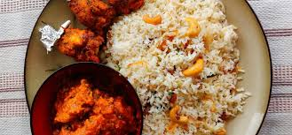

Menu Items
-
Chef Special Malabar Biriyani - Chicken - £11.99
Malabar biriyani, originating from the Malabar region in Kerala, India, is known for its unique blend of aromatic spices and short-grain rice called kaima. This biriyani is traditionally prepared in the "dum" style, where marinated chicken and partially cooked rice are layered and slow-cooked, allowing the flavors to meld together beautifully.
-
Spicy Chicken Fried Biriyani - £10.99
This biriyani is a fiery delight from South India, known for its liberal use of spices like black pepper, star anise, and curry leaves. The chicken is marinated and fried before being mixed with the spiced rice, creating a rich and flavorful dish.
-
South Indian Prawns Biriyani - £10.99
South Indian Prawns Biriyani is a coastal delicacy that combines fresh prawns with aromatic spices and coconut milk. This biriyani reflects the rich culinary traditions of Kerala, where seafood is a staple.
-
Ghee Rice and Chicken Kabab Combo - £10.99
This combo features fragrant ghee rice paired with succulent chicken kababs. Ghee rice, a staple in South Indian cuisine, is cooked with clarified butter and aromatic spices. The chicken kababs are marinated in a blend of spices and oil-fried to perfection.
 -
Chicken Kabab - £6.99
Chicken kababs have a rich history, originating from the Middle East and spreading across the world. These kababs are made witha south indian touch by marinating chicken pieces in a mix of spices and shallow fried, resulting in a juicy and flavorful dish.